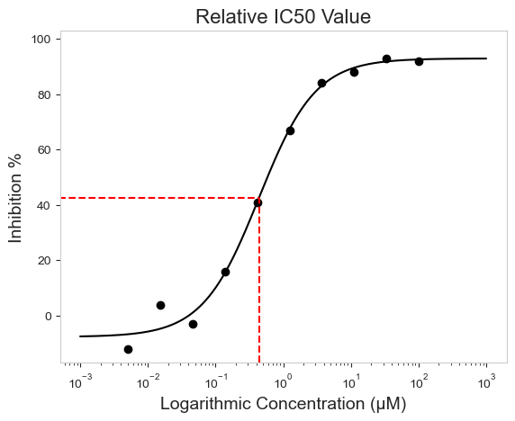
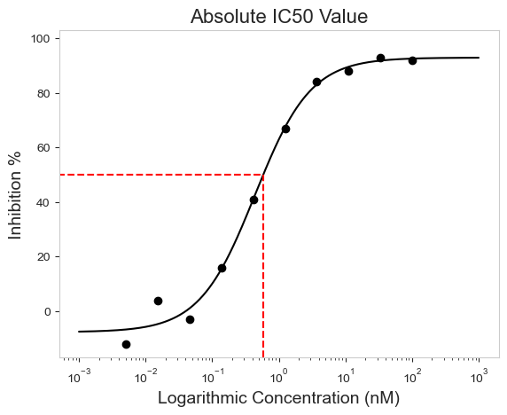
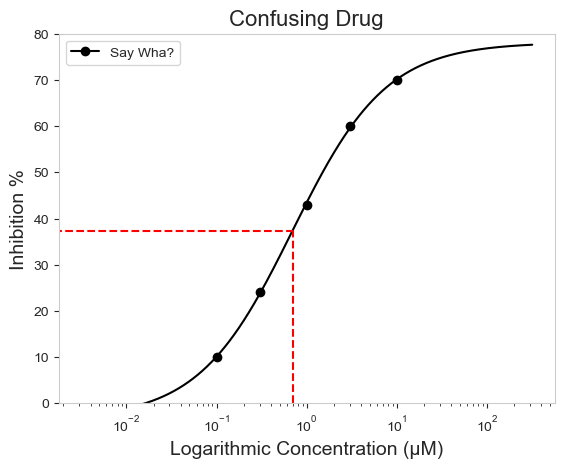
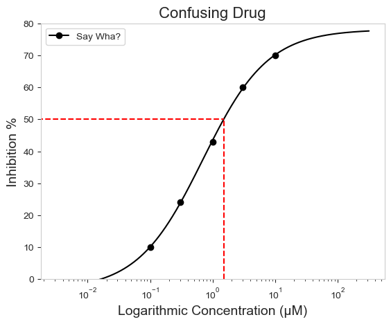
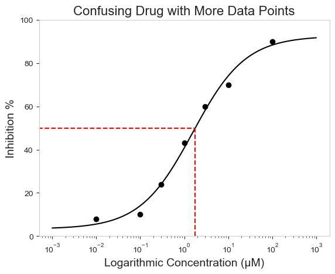

I do not know others, but when I first tried calculating IC50, I wanted to pull my teeth out. There is a lot more to know about IC50 than just the calculations and anyone can dive into an endless blackhole of information and never crawl out. Here I will try my best to explain what I know. Plus, it will be good to show off py50 plots. For anyone interested, the main code for this post can be found here.
TL;DR IC50 can be confusing and the final result will depend on the data you have on hand. Use your best judgement!
So what is an IC50 value?
On the surface, IC50 is an easy and fundamental pharmacological concept for researchers to quickly gauge the potency of a drug. It essentially asks - 🤔 How much of my drug is needed to inhibit my target protein activity by 50%. 💭 A given drug is tested at different concentrations to achieve this result.
A good introduction has been written up by Dr. Keith Hornberger (Tweetorial: IC50 vs. Ki). In the article, there are reasons given for why IC50 depends on many factors - the drug being tested, the conditions, which cell, etc. These can all have an influence on the final result.
Graphically, it will look like a sigmoidal plot (see here), where the Y-axis are the drug responses and the X-axis is the concentration. The concentrations on the X-axis are typically, but not always, logarithmic in order to assess the wide variations in the tested drug concentration. We will see that the final calculated IC50 can be just as ambiguous as the experiment itself. That brings us to Relative vs. Absolute values.
Image from GraphPad KNOWLEDGEBASE - ARTICLE #1566 (here)
In short, Relative IC50 is the concentration that brings the curve down to the point halfway between the top and the bottom plateaus of the curve. This is the most common definition for IC50. When anyone says my drug has an IC50 of X value, it is safe to assume that they mean relative IC50. The problem is that the relative IC50 may not correlate to exactly 50% response (Figure above).
In contrast, Absolute IC50 is the value at the exact point where the target response is 50%. The figure above details this point with the horizontal lines. Keep in mind that depending on the dataset and results, the 50% mark can also be ambiguous. It may be best to use absolute IC50 values if the response can be properly converted to a percentage (0% - 100%). However, how this is done can differ between methods and assays.
In this tutorial, we will not be too concerted with these aspects. Instead, we will focus on “weird” results that may result from the Relative vs Absolute IC50 calculation. Sometimes these results are due to limited datapoints (i.e. more concentrations should be tested). This will be explained further below.
Example start
First we will look at a “good example”. By this I mean there are enough points that can give a good representation of the plateau at both ends of the response. This is necessary to determine the general curve.
Here a .csv file will be read as a Pandas DataFrame. The current version of py50 requires a column with the drug name, drug concentration, and response average for the calculations. As seen in the Quickstart tutorial, the “calculate_IC50” will output a table with the final calculations. By default, the IC50 value is the Relative IC50 value.
We can double check the calculations if we like. There are two online IC50 calculators, AATBioquest IC50 Calculator and the Very Simple IC50 Tool Kit, both of which also give a relative IC50 value of 439.82 nM.
What does that mean graphically? Here, a graph of the dataset will be plotted with a box to highlight the Relative IC50 value. For this we can use the “conc_target” parameter, which will take in the input concentration of interest and draw a box between the X and Y axis with the curve at the intersection. In this case, we will see where the Relative IC50 value (439.82 nM) lands on the curve. This can also be checked using the “verbose=True” argument.
# Instantiate table into PlotCurve classabsolute = PlotCurve(good_example_df)figure = absolute.single_curve_plot(concentration_col='Compound Conc', response_col='% Inhibition Avg', plot_title='Relative IC50 Value', drug_name='Drug 1', xlabel='Logarithmic Concentration (µM)', ylabel='Inhibition %', conc_unit='µM', # Plot the concentration in µM box=True, box_color='red', conc_target=0.43982, # the IC50 value must be in same units as label xscale_ticks=(-3, 3), # To extend the tail at both ends of the curve figsize=(6.4, 4.8), verbose=True)
Drug 1 concentration will be in µM!
Concentration on X-axis will be in µM
Box X intersection: 0.44 µM
Box Y intersection: 42.607 %

Notice that the box is not at the 50% mark on the Y-Axis. Actually it is roughly 42.61% according to the output. Again, we can check this using the AATBioquest IC50 calculator, which also gives an inhibition response of 42.61% for the relative IC50 value. The calculations are consistent with each other. The final result si an IC50 value not exactly at the 50% response mark. Essentially, what is shown is the Relative IC50 value.
Comparison to Absolute IC50
What if we are interested to know the concentration at exactly 50% response? This number will be the Absolute IC50 value. We can calculate that easily with the “calculate_absolute_ic50” function. The exact Absolute IC50 value can also be highlighted using the ‘Box=True’ parameter and removing the ‘conc_target=’ parameter. By default, the box will be drawn at 50% response.
Bear in mind - Absolute IC50 in this case is relative to the input dataset. Like the relative IC50 value, it can change depending on a number of factors.
When calculating the Absolute IC50 with py50, by default it will output both the Relative and Absolute IC50 values.
The Absolute IC50 for this dataset can be calculated and plotted as follows:
Drug 1 concentration will be in µM!
Concentration on X-axis will be in µM
Box X intersection: 0.585 µM
Box Y intersection: 50 %

The concentration for the Absolute IC50 will be 585.47 nM for this dataset. Again, it can be double checked using the AATBioquest IC50 calculator. When comparing the results on the AATBioquest calculator, the concentration at 50% response on the Y-axis also outputs an X-axis value of 584.72, similar to our calculated Absolute IC50 table.
Why go through all of this?
There are a lot of factors that can influence the IC50 calculation. It can also be impacted by the experimental design. The minimum number of concentrations needed to calculate IC50 is two, however there are varying methods that can result in varying numbers. py50, for example, requires at least 4 datapoints to calculate the IC50. And it is always advisable to test at more concentrations than 2 (I personally would be more suspicious if there was only 2 points!). Typically, the more concentrations tested the better and more accurate the calculated IC50 will be.
Here is another example. In this case, the dummy drug was only tested at five different concentrations.
Notice that with this example, the Relative IC50 and the Absolute IC50 values vary greatly, with the Relative being in the nM and Absolute being in the µM range. A huge difference! Again, similar calculations are seen when using the AATBioquest IC50 calculator. When plotting the results, disheartening results are also shown.
Say Wha? concentration will be in µM!
Concentration on X-axis will be in µM
Box X intersection: 0.695 µM
Box Y intersection: 37.372 %

More specifically, the Relative IC50 for the Say Wha? is closer to 37.3%. As personal preference, I do not think this is indicative of the meaning for “IC50”. It is further from the 50% than the first example above! When the plot is adjusted for the Absolute IC50 below, we see a more reasonable graph representation. More specifically, the Absolute IC50 would make more sense in relation to the data as the concentration for 50% inhibition response would be located somewhere between 3000 and 1000 nM (See Table above).
Say Wha? concentration will be in µM!
Concentration on X-axis will be in µM
Box X intersection: 1.498 µM
Box Y intersection: 50 %

In this case, the Absolute IC50 more precisely puts the 50 in IC50. Keep in mind that this only works with the data on hand and for this case, it appears to be a more accurate representation of the dataset.
How to get more precise?
One way to get more precise IC50 calculations is to increase the number of concentrations tested for a given drug. More points, especially at the end of the plateau, would help give a better indication of the drug potency. Here we will add 2 additional concentration points to our test and calculate the Relative and Absolute IC50 Values
From the new table, you can see that adding more points will adjust both the Relative and Absolute IC50 values. Both values will begin to move closer to each other. Again, this appears to be reasonable due to the Inhibition average of the dataset, where 50% inhibition should fall somewhere between the 1000 and 3000 nM concentration. This will also change the way the graph looks as follows:
example_plot = PlotCurve(confusing_example_df)figure = example_plot.single_curve_plot(concentration_col='Compound Conc', response_col='% Inhibition Avg', plot_title='Confusing Drug with More Data Points', drug_name='Say Wha?', xlabel='Logarithmic Concentration (µM)', ylabel='Inhibition %', legend=False, conc_unit='µM', xscale_ticks=(-3, 3), line_color='black', box=True, x_concentration=1.563735262, # Highlight Relative IC50 box_color='red', figsize=(6.4, 4.8), verbose=True)
Say Wha? concentration will be in µM!
Concentration on X-axis will be in µM
Box X intersection: 1.78 µM
Box Y intersection: 50 %

Using the AATBioquest IC50 calculator, if you are feeling adventurous, can be used ot double check the above results. Both the Relative (1563.74 nM) and Absolute IC50 (1782.84 nM) values are closer to the 50% response, with the Relative IC50 increasing to 47.89% response for this example. These results are also reasonable due to the dataset on hand. It may be subjected, but the curve can be smother, and additional testing would be needed to achieve this. Consulting an appropriate protocol would be advisable.
Takeaway
IC50 values can be confusing. Here I try to explain a bit about Relative and Absolute IC50. I think Absolute IC50, especially in the examples here and in py50, may be a misnomer. It is not the “absolute” result for a drug. The results will always vary depending on a number of factors. Nevertheless, I use it in this case because it is absolute to the data on hand.
In general, the more concentration points to obtain the plateau for 0% and 100% responses, the better. The best thing to do is to remember to take stock of your final dataset. Know where the 50% response should lay within your dataset and you can doublecheck the results by eyeballing the calculated (Relative or Absolute) IC50 value. But always remember - the calculated value is representative of the dataset on hand and may not represent the definite (Absolute) result.